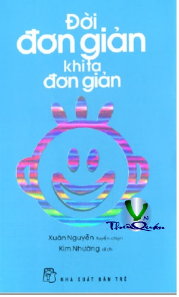

« Back
Đời Đơn Giản Khi Ta Đơn Giản
By Xuân Nguyển Tuyển Chọn Dịch Giả:Kim Nhường

Mục Lục
Hít Thở
Tĩnh Lặng
Hướng Dẫn Ngắn Gọn
Tận Hưởng
Đời Là Một Cuộc Trải Nghiệm
Đơn Giản Bình Yên
Cô Đơn Một Nghệ Thuật Bị Đánh Mất
15 Cách Để Tạo Ra Thêm
Một Chất Liệu
Thiền Trong Hành Động
Sống Đơn Giản
Để Không Vội Vàng
25 Cách Để Đơn Giản Hóa
Vệ Sinh Email
Hướng Dẫn Ngắn
10 Lợi Ích Của Dậy Sớm
60 Lý Tưởng
Đơn Giản Hóa Thói Quen
7 Cách Đơn Giản Để Nói 'Không'
13 Việc Nhỏ
21 Cách Giữ Nhà Cửa Đơn Giản
7 Câch Đơn Giản Để Đối Phó
Phương Pháp Tiếp Cận Quy Mô
Thói Quen Đơn Giản Hàng Ngày
5 Cách Đơn Giản
Để Đơn Giản Khi Bạn Thích
11 Cách Sáng Tạo
2 Phút Mỗi Ngày Thay Đổi Cuộc Đời
Đơn Giản Hóa
Bí Quyết Ra Quyết Định Quan Trọng
Định Nghĩa Lại Đơn Giản:
Dọn Dẹp Cuộc Sống Đón Năm Mới
Triết Lý Chân Trần